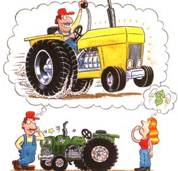

YOU CAN "SMELL" A NEW TRACTOR COMING two or three years ahead. The first thing a wife notices is that the thrill-of the old tractor, that is-is gone. He no longer fondles the fenders, caresses the hood. No more does he run in the face of a storm to get 'er under cover. A crumpled muffler may leap into the wind for months on end. The vinyl seat splits and he seems not to notice. Foam oozes from the rupture and is carelessly obscured beneath a feed bag. Gone is the pride that once moved him to slyly detour visitors through the tractor shed. It doesn't seem very important anymore who drives the old thing-the wife even gets a crack at it.
"Give you any trouble?" he'll ask casually at lunch. Then, as he chomps down on a cob of corn he'll move into phase two of the buildup: innuendo and suggestion.
"Been startin' a little hard lately. Thought maybe you'd notice a little rough, don't you think?" You can agree or disagree. The psycholog-cal markup is in progress. The seeds of disturbances have been sown..
"D' ja notice how much oil that tractor's been burning?" he'll say to his son one day, making sue you're within earshot Then early some morning he'll interrupt his bookkeeping by walking into We kitchen (ostensibly for something to eat) and remarking, "Guess how much we spent for repads on the 706 last year?" And ben he'll go on to name a figure half again as high as the household budget.
"What?" you shriek." On that new tractor?"
"That new tractor is ten years old."
"You're kidding."
"I am not kidding. We bought it the year the willow tree fell on the outhouse. Remember? I'll tell you how long we've had that tractor. We've had it so long it's paid for."
The next thing you know, there's a tractor dealer coming by on trumped-up charges, hanging around the gas pump, leaving slick, four-color brochures in your kitchen, "giving" your husband the kind of time he's charging $10 an hour for back at the shop.
Someplace in the campaign you'll be treated to the "poor lil' ol' me" routine.
"Russ and Chuck traded their John Deeres in on a coupl'a 4wheel-drive Cases two years ago. Don, Lenny, George, and Bob-they've all had a complete tractor turnover since we bought that 706.
Then there's the scare technique: "Parts are gettin' harder and harder to locate for that machine. Wouldn't surprise me a bit if they quit making them altogether."
About this time you'll find a list of figures on a scratch pad conveniently placed to catch your eye--over the sink next to the telephone, on the back of the john. You think at first it's an inventory of all your holdings.
"Is this anything you want to keep you ask.
'Oh, that-that's just something the dealer jotted down for me. Uhhh... so me figures on a tractor-and a plow.
New tractor takes a new plow. Says he'll take my old tractor on trade and give me just what I paid for it ten years ago. That takes 'er on down to about fourteen thousand "
Fourteen thousand dollars! Holy cow!
We don't want to buy the business We just need a tractor!" You suddenly realize that it's all over.
Reprinted from All My Meadows, byPatricia Leimbach. Copyright © 1977 by Patricia Penton Leimbach.
|
 |
|
|